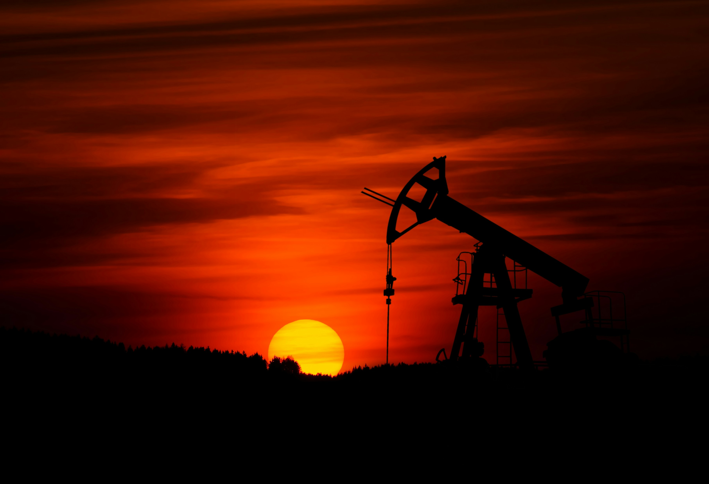
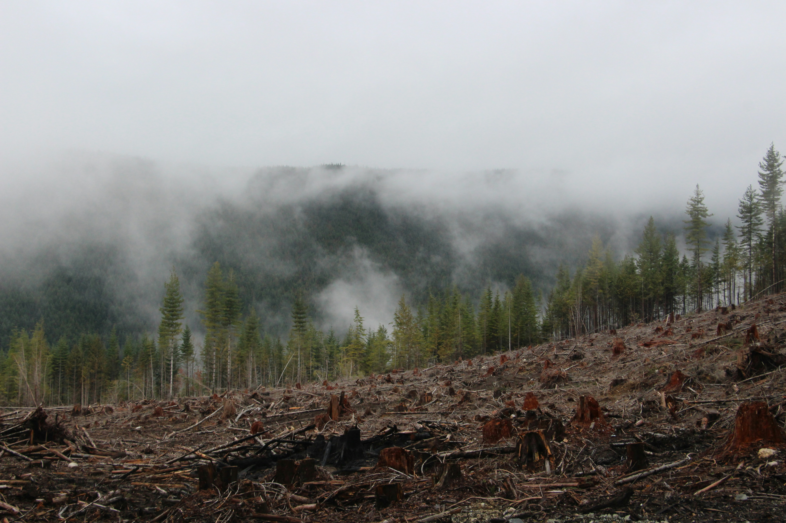
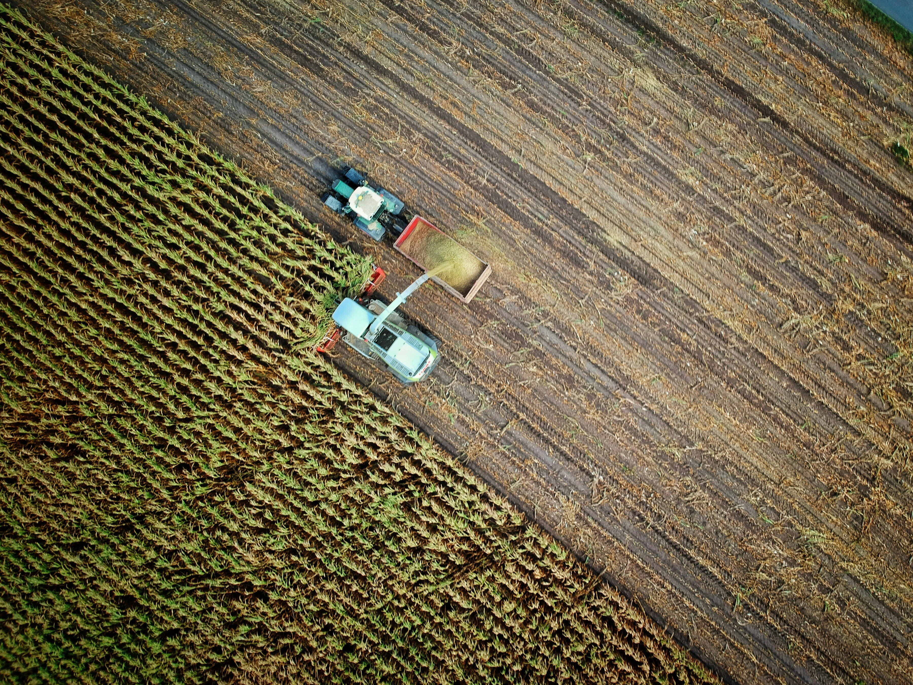

Sürdürülebilir
Kalkınma
Hedefleri
Birleşmiş Milletler'in 17 hedefi, gezegeni ve insanlığı kurtarmak için çizilen küresel haritadır. İklim krizi bu hedeflerin tamamını tehdit ediyor.

Soyut raporları ve karmaşık grafikleri bir kenara bıraktık. İklim krizi uzak kutuplardaki eriyen buzullardan ibaret değil; her gün soluduğumuz havada, attığımız her adımda ve aldığımız her kararda saklı. Gerçeği tüm çıplaklığıyla hissetmeye hazır mısınız?
Birleşmiş Milletler'in 17 hedefi, gezegeni ve insanlığı kurtarmak için çizilen küresel haritadır. İklim krizi bu hedeflerin tamamını tehdit ediyor.
İklim değişikliği gökten inmedi; onu biz, özellikle son 150 yılda fosil yakıt yakarak, ormanları yok ederek ve üretim biçimimizle inşa ettik. Sebepleri anlamak, çözümün ilk adımıdır.
Elektrik üretimi, ısınma ve sanayi için kömür, petrol ve doğal gaz yakmak, küresel sera gazı emisyonlarının %75'inden fazlasının kaynağı. Her kilovat saat hâlâ büyük ölçüde fosil yakıtla üretiliyor.
Almanya'da linyit kömürü çıkarmak için açılan devasa açık ocak — köyler ve ormanlar yerini kilometrelerce genişlikte bir çukura bırakıyor.
Dünyanın en büyük kömür tüketicisi; binlerce aktif termik santral küresel kömür emisyonlarının büyük kısmını oluşturuyor.
Petrol çıkarımı sırasında yaşanan sızıntılar, on yıllardır bölgenin sucul ekosistemlerini ve tarım arazilerini kirletiyor.
Ormanlar atmosferdeki karbonu emen doğal süngerlerimiz. Her yıl kaybedilen milyonlarca hektar orman, hem bu karbon yutağını yok ediyor hem de depolanmış karbonu atmosfere geri salıyor.
Brezilya'da tarım ve hayvancılık için her yıl milyonlarca hektar yağmur ormanı temizleniyor — dünyanın en büyük karbon yutaklarından biri küçülüyor.
Endonezya ve Malezya'da palmiye yağı tarımı için yok edilen ormanlar, adanın eşsiz biyoçeşitliliğini tehdit ediyor.
Dünyanın ikinci büyük yağmur ormanı, kereste ticareti ve madencilik baskısı altında giderek küçülüyor.
Çimento, çelik ve kimyasal üretimi, hem enerji yoğun süreçler hem de üretimin kendisinden kaynaklanan kimyasal reaksiyonlar nedeniyle emisyonların önemli bir kısmını oluşturuyor.
Almanya'nın tarihi ağır sanayi merkezi; yüksek fırınlar ve çelik tesisleri yüzyıldan uzun süredir bölgenin emisyon profilini belirliyor.
Hindistan ve Çin'deki tesisler, küresel çimento üretiminin yarısından fazlasını karşılıyor — yüksek sıcaklıkta pişirme süreci büyük miktarda CO₂ açığa çıkarıyor.
Yoğun petrokimya tesisleri kompleksi, ABD'nin en büyük endüstriyel emisyon bölgelerinden birini oluşturuyor.
Hayvancılık metan, gübre kullanımı ise nitröz oksit salımına yol açıyor. Bu iki gaz, CO₂'den çok daha güçlü ısınma etkisine sahip.
Endüstriyel ölçekte et üretimi için ayrılan geniş otlaklar, hem ormansızlaşmayı hem de metan emisyonlarını birlikte tetikliyor.
Su altında kalan pirinç tarlaları, anaerobik ayrışma yoluyla yüksek miktarda metan gazı açığa çıkarıyor.
Aşırı azotlu gübre kullanımı, topraktan atmosfere güçlü bir sera gazı olan nitröz oksit salınımına yol açıyor.
Karayolu, deniz ve hava taşımacılığı küresel emisyonların beşte birine yakınını oluşturuyor; elektrikli ve düşük karbonlu ulaşıma geçiş bu yükü doğrudan azaltabilir.
Dünyanın en yoğun karayolu trafiğine sahip şehirlerinden biri; günlük milyonlarca araç yolculuğu önemli bir emisyon kaynağı oluşturuyor.
Ağır fuel-oil kullanan dev konteyner gemileri, küresel ticaretin omurgası olmakla birlikte denizcilik emisyonlarının başlıca kaynağı.
Kıtalar arası uçuşların yüksek irtifada saldığı emisyonlar, havacılığın iklim etkisini karbondioksitin ötesine taşıyor.
Aynı gezegen, iki ayrı yol. Bugün attığımız adımlar — ya da atmadığımız adımlar — hangi tarafta yaşayacağımızı belirliyor.
Bu manzaralar hâlâ burada — ama sonsuza dek kalmayacaklar. Şimdi harekete geçersek, gelecek nesiller de aynı güzelliği görebilir.




Bu manzaralar artık eskisi gibi değil. Eylemsizlik, geri dönüşü zor bir yıkımı gezegene yazdı.
İklim krizi tek bir aktörün sorunu değil — ama çözümü de öyle. Bireysel alışkanlıklarımız ile büyük ölçekli politikalar birlikte hareket ettiğinde gerçek fark yaratılır.
Evde ve işte enerji verimli cihazlar kullanmak, gereksiz tüketimi azaltmak küçük ama toplamda büyük bir etki yaratır.
Toplu taşıma, bisiklet ya da yürüyüşü tercih etmek; mümkünse elektrikli araçlara geçmek karbon ayak izini doğrudan düşürür.
Kırmızı et ve işlenmiş gıda tüketimini azaltmak, yerel ve sezonluk ürünleri tercih etmek hem sağlık hem iklim için kazan-kazan.
Daha az satın almak, geri dönüştürmek ve döngüsel ekonomiye katkı sağlamak israfı azaltır.
Hükümetlerin ve şirketlerin fosil yakıt yatırımlarını güneş, rüzgâr ve diğer temiz enerji kaynaklarına yönlendirmesi gerekiyor.
Karbon vergisi ve emisyon ticaret sistemleri, kirletenin bedelini ödemesini sağlayarak temiz teknolojiye geçişi hızlandırır.
Ormansızlaşmayı durdurmak ve büyük ölçekli ağaçlandırma projeleri, doğal karbon yutaklarını güçlendirir.
Paris Anlaşması gibi küresel çerçeveler, ülkelerin ortak ve denetlenebilir hedefler etrafında birleşmesini sağlar.
İyi haber: dünya tamamen hareketsiz değil. Paris Anlaşması'ndan yenilenebilir enerjideki rekor büyümeye kadar, küresel ölçekte somut adımlar atılıyor — ama hız yeterli değil.
2015'te 195 ülke, ısınmayı 2°C'nin altında tutmayı taahhüt etti.
Her yıl ülkeler emisyon hedeflerini ve iklim finansmanını burada müzakere ediyor.
Güneş ve rüzgar maliyetleri %80 düştü; artık çoğu yerde fosil yakıttan daha ucuz.
Küresel EV satışları rekor kırıyor; üreticiler içten yanmalıdan çıkış açıklıyor.
Bu sayfa bir başlangıç noktası. İklim krizini daha derinlemesine anlamak isteyenler için güvenilir kaynaklar derledik.
David Attenborough'un anlattığı, iklim krizini bilimsel verilerle anlatan Netflix belgeseli.
Dünyanın en kırılgan ekosistemlerini gözler önüne seren Netflix belgesel serisi.
Al Gore'un küresel farkındalık yaratan öncü belgesel filmleri.